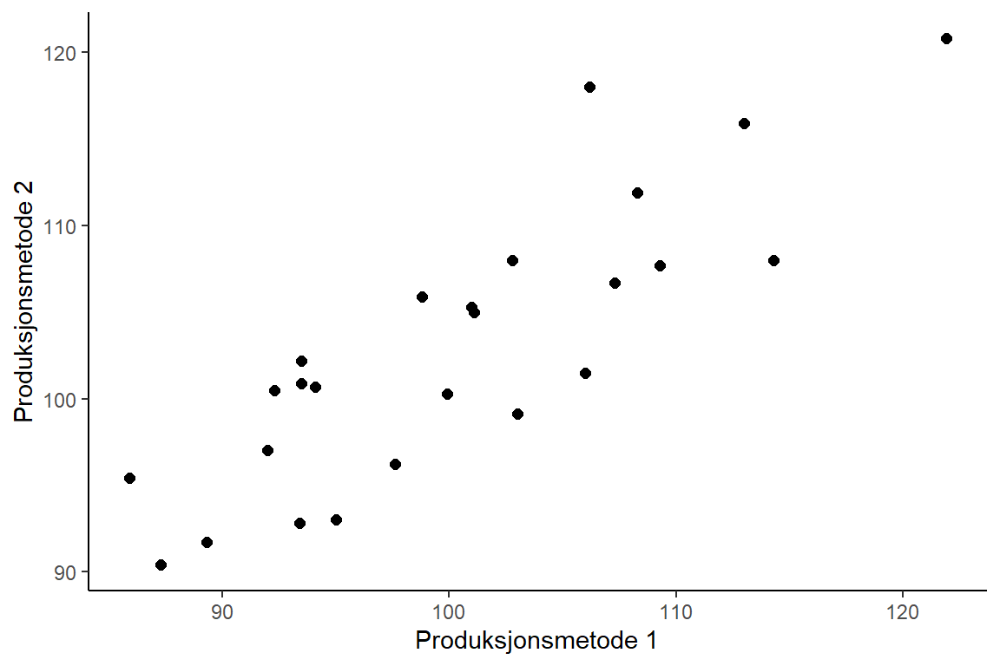
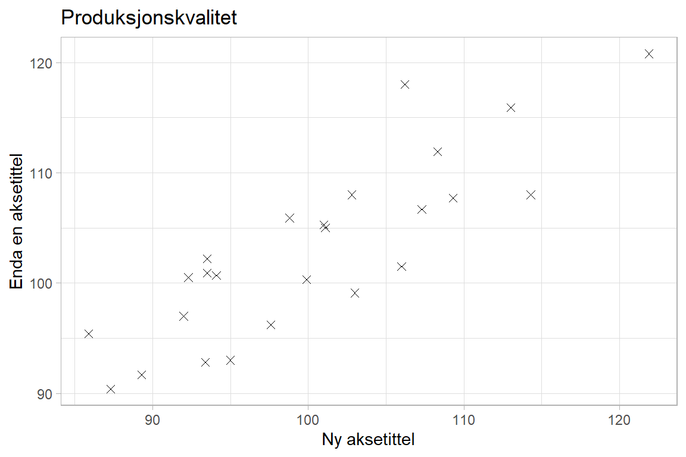

1 Introduksjon til R
Vi skal i dette kurset bruke programmeringsspråket R til å gjøre beregninger og gjennomføre de ulike statistiske analysene som vi skal lære etter hvert. Dette vil være nytt for mange. Vi skal først og fremst skrive kode og kommandolinjer for å få ut resultater i R, noe som kan oppleves uvant siden vi ellers er vant til å klikke oss frem i et menysystem når vi jobber med ulike programmer. Trøsten kan være at ferdigheter i programmering blir stadig viktigere i mange yrker, spesielt innen økonomifaget.
R er kommandobasert: du skriver en kommando, og R regner ut svaret. Vil du for eksempel ha gjennomsnittet av tallene 3, 2 og 5, skriver du mean(c(3, 2, 5)) og får svaret tilbake. Dette føles uvant i starten, men du kommer raskt inn i tankegangen, og datalabbene gir deg god trening.
Vi må installere to ting på maskinen vår før vi går videre: selve programmeringsspråket R, samt programmet RStudio som vi skal bruke til å skrive og kjøre koden. RStudio gjør R enklere å bruke: på samme måte som Word hjelper deg å lage oversiktlige tekster, hjelper RStudio deg å skrive og kjøre oversiktlige R-analyser. Begge deler er gratis, og begge deler fungerer fint på både Windows og Mac (og Linux!). Det er greiest å gjøre dette i riktig rekkefølge:
Gå til cloud.r-project.org for å laste ned R til ditt operativsystem, og installer på vanlig måte uten å forandre på foreslåtte innstillinger.
Gå til posit.co/download/rstudio-desktop. Der laster du ned RStudio-programmet for ditt operativsystem og installerer på vanlig måte. Det er heller ikke her nødvendig å forandre på de foreslåtte innstillingene.
Du kan så åpne RStudio, og følge sekvensen av videoforelesninger som følger under.
1.1 En gjennomgang av RStudio
I denne videoen snakker vi litt om forskjellen mellom programmeringsspråket R og programmet RStudio. Vi åpner opp RStudio og rusler gjennom det grafiske grensesnittet.
Under følger en skriftlig oversikt for deg som vil ha det i tillegg til videoen. Første gang du åpner RStudio ser du tre vinduer. Et fjerde vindu åpner du med å klikke på File i menyen, så New File, og så R Script. Figur 1.1 viser en oversikt over de fire vinduene. Det er viktig at du forstår forskjellen på de to vinduene til venstre.
Nederste vindu til venstre (b) viser R-konsollen, og det er her alle utregninger blir gjennomført. I dette vinduet kan du for eksempel skrive:
(3*5 - 3/4)*(2 + 2)[1] 57Her er (3*5 - 3/4)*(2 + 2) en kommando, og det er R som finner ut hva du mener og gir deg svaret 57 i retur. R tillater alle de vanlige matteoperasjonene som gange, deling, pluss og minus (*, /, +, -).
Det øverste vinduet til venstre (a) viser en .R-fil (et skript). En .R-fil fungerer som et manuskript med R-kommandoer, og kan lagres slik at du senere kan se hvilke kommandoer du har brukt og fortsette der du slapp. Når du vil at R skal utføre en kommando du har skrevet i .R-filen, markerer du linjen (eller lar pekeren stå i den) og trykker Ctrl + Enter (Cmd + Enter på Mac):

Vinduet nederst til høyre (d) viser blant annet figurer du lager og hjelpetekst. Vinduet øverst til høyre (c) gir deg en oversikt over hvilke objekter du har laget, og er spesielt nyttig hvis du vil ta en nærmere titt på et datasett du har lest inn.
Det er viktig at du forstår forskjellen på de to vinduene til venstre, altså .R-filen og konsollen. R-kode du vil ta vare på, og som er en essensiell del av analysen, skriver og lagrer du i .R-filen, mens små eksperimenter og undersøkelser du ikke trenger senere kan du gjøre direkte i konsollen.
For de av dere som er glad i hurtigtaster finnes det en oversikt i RStudio som kommer opp dersom du trykker Alt + Shift + K (Option + Shift + K på Mac). Hurtigtasten du kommer til å bruke desidert mest er Ctrl + Enter for å kjøre kode fra R-skriptet ditt i konsollen (på Mac erstatter du Ctrl med Cmd overalt).
1.2 Enkle beregninger og variabler
Vi går videre og skriver våre første kommandoer i R. Det er kritisk at vi allerede nå setter i gang med å få programmeringen inn i fingrene, og det gjøres best ved å skrive inn kodelinjene slik det gjøres i videoen, og passe på at du får ut de samme resultatene.
# Vi kan bruke R som en kalkulator:
2+2
# Det var enkelt! Vi må bruke parenteser dersom vi har mer kompliserte uttrykk:
(2+8)/2
2+8/2
# Variabler er viktige i R. Vi kan lagre mer eller mindre hva som helst i
# dataminnet ved å gi det navn:
a <- 5
a
a*5
b <- 3
# R gjennomfører alle operasjoner på høyresiden før verdien blir tilordnet
# variabelen c:
c <- a+b
c
# Ingen feilmeldinger, advarsler eller spørsmål ved overskriving:
c <- 4
c <- c + 2
c
# La oss lage en feilmelding!
d
# Vi kan navngi omtrent slik vi vil, og dette er ikke et trivielt problem i
# større prosjekter!
hva_som_helst <- "hello world"
hva_som_helstR har også en rekke innebygde standardfunksjoner for vanlige matematiske operasjoner. To av dem, eksponentialfunksjonen exp() og logaritmen log(), kommer vi til å bruke mye senere i kurset, blant annet til logaritmiske transformasjoner i regresjon og til logaritmisk avkastning i tidsrekker:
# Eksponentialfunksjonen og logaritmen:
exp(1) # e opphøyd i 1, altså tallet e (ca. 2.718)
log(exp(1)) # naturlig logaritme (grunntall e), motstykket til exp()
log(100) # NB: log() regner ut den NATURLIGE logaritmen
log10(100) # tierlogaritmen (grunntall 10)
log(8, base = 2) # logaritme med valgfritt grunntall (her 2)
# Noen andre nyttige standardfunksjoner:
sqrt(16) # kvadratrot
abs(-5) # absoluttverdi
round(3.14159, 2) # avrunding til 2 desimalerLegg spesielt merke til at log() som standard regner ut den naturlige logaritmen (grunntall \(e\)), ikke tierlogaritmen. Ønsker du tierlogaritmen, bruker du log10().
Når du er ferdig med det kan du prøve deg på følgende lille oppgave:
Oppgave: Velg dine tre favorittall og lagre dem i tre forskjellige variabler. Beregn så ditt magiske tall, som er summen av favorittallene dine. Lagre ditt magiske tall i en ny variabel, og gi denne variabelen et informativt navn som identifiserer hva det er.
Fikk du det til? Kikk på løsningen under for å sjekke.
Løsning
tall1 <- 1
tall2 <- 87
tall3 <- 101
magisk_tall <- tall1 + tall2 + tall31.3 Vektorer
Vi introduserer begrepet vektorer som er svært viktig i statistikk generelt og i R spesielt. En vektor er ganske enkelt en samling med tall, og når vi senere begynner å jobbe med data kommer vi til å lagre observasjoner av ulikt slag i vektorer. Vi ser også at vi kan gjøre operasjoner på vektorer ved å bruke funksjoner. For eksempel bruker vi sum()-funksjonen til å regne ut summen av alle tallene som er lagret i en vektor.
# Vi kan lage en vektor på følgende måte:
vector1 <- c(3, 5, 7.8, 10, 2, 0.16, -3)
# Skriv ut:
vector1
# Plukke ut verdier
vector1[1] # Plukker ut verdier med hakeparenteser
vector1[10] # Out-of-range error
vector1[2:5] # Plukke ut en sekvens
vector1[c(1,3)] # Plukke ut verdier basert på en ny vektor!
# Bokstaven "c" står for combine. R gjør det veldig enkelt å jobbe med
# vektorer:
vector1 - 1
vector1*3
# Vi kan bruke *funksjoner* til å regne ut forskjellige ting:
length(vector1)
mean(vector1)
sum(vector1)
sd(vector1)
# Vi kan lage vektorer av andre ting enn tall:
vector2 <- c("hello", "world")
# ... men en vektor kan bare inneholde en datatype.
# Kanskje trenger vi standardavviket senere?
sd_vector1 <- sd(vector1)
sd_vector1Oppgave: Beregn maksimum- og minimumsverdien av vector1, samt medianen, ved å bruke funksjoner i R. (Hint: en dårlig skjult hemmelighet i anvendt programmering er at dersom vi ikke vet navnet på funksjonen vi skal bruke, så er Google vår beste venn!)
Løsning
# Relevante Google-søk: "minimum value r", "maximum r", "median r"
min(vector1)
max(vector1)
median(vector1)1.4 Pakker
Vi lærer at når vi laster ned R så følger det med et grunnleggende sett av funksjoner (“base R”), men at det finnes et stort antall tilleggspakker. Vi kan enkelt laste ned og installere disse pakkene ved å skrive kommandoen install.packages("pakkenavn"). Det trenger vi bare gjøre en gang på datamaskinen vår. For å bruke pakken må vi skrive kommandoen library(pakkenavn), og det må vi gjøre hver gang vi restarter R.
# For å installere pakken så kjører vi følgende kommando. Denne kjøres
# bare en gang per maskin, den blir installert en gang for alle.
install.packages("readxl")
# Når vi skal bruke pakken så laster vi den inn ved å bruke "library()"-
# funksjonen, og den må kjøres hver gang vi starter R:
library(readxl)Oppgave: Installer følgende pakker, som vi kommer til å bruke senere i kurset:
ggplot2dplyrstargazer
Løsning
install.packages("ggplot2")
install.packages("dplyr")
install.packages("stargazer")1.5 Mappesti
Vi kommer til å forholde oss til filer på flere måter. Vi skal lese inn datafiler, og vi kommer til å produsere ulike former for output, slik som figurer og tabeller. Vi må da ha kontroll på hva R bruker som gjeldende mappesti (“working directory”) der filer som skal leses inn ligger, og der ulike output-filer havner. Vi kan bruke funksjonen getwd() til å sjekke hva som er gjeldende mappesti. For å forandre mappestien kan vi bruke menysystemet (Session -> Set Working Directory -> Choose Directory), eventuelt funksjonen setwd() med ønsket mappesti som argument.
Oppgave: Pass på at du har gjort følgende før du går videre til neste leksjon:
- Du har laget en dedikert mappe på datamaskinen din der du skal samle alt materiale som vi bruker i dette kapitlet.
- Du har lastet ned filen testdata.xls og lagt den i den nye mappen din.
- Du har endret gjeldende mappesti til denne mappen.
- Du har bekreftet at gjeldende mappesti nå er korrekt.
1.6 Innlesing av data
Vi leser inn tabellen i excelfilen som en tabell (“data frame”) i R ved hjelp av funksjonen read_excel() i readxl-pakken og ser på noen enkle kommandoer for å jobbe med en slik tabell.
# Datasettet er i .xls-formatet, så vi trenger readxl-pakken for å laste det inn
# i R.
library(readxl)
# Inne i denne pakken så er det en funksjon som heter read_excel:
read_excel("testdata.xls")
# Det gikk bra, men for å bruke dette datasettet, så må vi lagre det til en
# variabel.
testdata <- read_excel("testdata.xls")
# Skriver ut (toppen av) datasettet.
testdata
# Nå ser vi datasettet i vinduet oppe til høyre. Vi kan se på det ved å
# skrive navnet til datasettet i konsollen, og vi kan hente ut individuelle
# kolonner som vektorer ved å bruke dollartegnet $:
testdata$X1
# Regner ut gjennomsnittet for X1 og X2:
mean(testdata$X1)
mean(testdata$X2)
# Hvor mange rekker/observasjoner har vi?
nrow(testdata)Oppgave:
- Hvor mange kolonner har datasettet vårt?
- Kan du finne en måte å skrive ut en vektor som inneholder summen av
X1- ogX2-kolonnene i datasettet? (Altså, vi vil vite summen av de to første elementene iX1ogX2, summen av de to andre elementene, osv.) - Hva er summen av alle tallene i
X1- ogX2-kolonnene itestdata?
Løsning
# 1
ncol(testdata)
# 2
testdata$X1 + testdata$X2
# 3
sum(testdata$X1 + testdata$X2)1.7 Statistiske analyser
Vi ser på et eksempel der vi kjører en enkel statistisk analyse (en \(t\)-test) på datasettet vårt, og hvordan vi kan gjøre ulike valg ved å endre argumenter i funksjonskallet. Vi bruker også hjelpefilene til å lese mer om funksjonen vi bruker.
# En grunnleggende t-test for likhet mellom to forventningsverdier:
t.test(testdata$X1, testdata$X2)
# Antar lik varians og kjører tosidig test (dette kommer vi tilbake til):
t.test(testdata$X1, testdata$X2, var.equal = TRUE, alternative = "two.sided")
# Du kan lese mer om enhver funksjon i R, inkludert om alle mulige argumenter og
# eksempler på bruk, ved å skrive et spørsmålstegn foran funksjonsnavnet i
# konsollen:
?t.test
# Kanskje ønsker vi å hente ut p-verdien for testen og bruke den til noe senere.
# Vi kan lagre testresultatet i en variabel først, og så bruke $-tegnet til å hente
# ut p-verdien på følgende måte:
testresultat <- t.test(testdata$X1, testdata$X2, var.equal = TRUE, alternative = "two.sided")
testresultat$p.value
# Hvilken annen informasjon finner vi i dette testobjektet?
str(testresultat)Hjelpesiden til en funksjon er bygd opp likt for de fleste funksjoner: en kort beskrivelse av hva funksjonen gjør, en liste over argumentene den tar, og helt nederst noen konkrete eksempler på bruk. Eksemplene nederst er ofte det raskeste stedet å begynne når du skal lære en ny funksjon.
Oppgave: Hva er verdien av testobservatoren (test statistic) i testen som vi gjorde i denne videoen? Hint: Bruk hjelpefilene til t.test()-funksjonen.
Løsning
testresultat$statistic1.8 Plotting
Vi lager vår første figur i R ved å bruke den innebygde plot()-funksjonen. Vi går så over til å se hvordan vi kan lage det samme plottet ved å bruke ggplot-pakken, som er det vi kommer til å bruke til å lage figurer i dette kurset. Vi ser også hvordan vi kan gå frem for å lagre plottet som en pdf-fil i arbeidsmappen vår.
# Et viktig element i dataanalyse er å lage grafiske presentasjoner av datasett.
# La oss lage et enkelt spredningsplott av våre to variabler ved å bruke den
# innebygde plottefunksjonen i R.
plot(testdata$X1, testdata$X2)
# Gjør noen justeringer:
plot(testdata$X1, testdata$X2,
pch = 20,
bty = "l",
xlab = "X1",
ylab = "X2")
# I dette kurset skal vi heller bruke ggplot2-pakken til plotting:
library(ggplot2)
# Her er koden for å lage et enkelt spredningsplott for X1- og X2-kolonnene i
# datasettet vårt:
ggplot(testdata, aes(x = X1, y = X2)) + geom_point()
# Vi lagrer plottet ved å kjøre ggsave-kommandoen rett etter plottekommandoen:
ggsave("testplot.pdf")
# En mer fleksibel måte å gjøre dette på er å lagre plottet i en variabel, og så
# gi navnet til plottet inn som et argument i ggsave-funksjonen.
p <- ggplot(testdata, aes(x = X1, y = X2)) + geom_point()
ggsave("testplot.pdf", p)
# På den måten så kan vi lagre plottet p når som helst, vi trenger ikke
# nødvendigvis gjøre det rett etter plottekommandoene.Oppgave: Klarer du, for eksempel ved å søke etter relevante ggplot-kommandoer på nettet, å få prikkene i plottet til å bli større, og samtidig gjøre dem blå?
Løsning
ggplot(testdata, aes(x = X1, y = X2)) + geom_point(colour = "blue", size = 5)1.9 Script
I stedet for å skrive kommandoene rett inn i konsollen, hopper vi nå over til teksteditoren i RStudio og lager et script i stedet. Her kan vi samle alle kommandoene våre i en fil, som vi kan lagre og kjøre igjen senere. Vi ser også hvordan vi enkelt kan kjøre enkeltlinjer i scriptet vårt i R-konsollen ved hjelp av Ctrl-Enter (Command-Enter på Mac). Vi ser at vi kan skrive kommentarer i scriptene våre ved å bruke #-tegnet, som kan være nyttig for å holde oversikten. Til slutt lagrer vi scriptet i arbeidsmappen.
Oppgave: Pass på at du nå har lagret scriptet som en .R-fil i mappen som vi laget for denne R-leksjonen. Lukk RStudio. Naviger så til denne mappen i filutforskeren og dobbelklikk på skriptet. Forhåpentligvis åpnes RStudio nå (Hvis ikke, eller hvis filen åpnes i det som heter R GUI, høyreklikker du på filen og velger “Åpne i”, og deretter RStudio. Du kan også gjerne sette RStudio som standardprogram for .R-filer).
Finn ut hva gjeldende arbeidsmappe nå er i RStudio. Hva skjedde nå? Hvorfor er dette nyttig?
Løsning
Når vi åpner RStudio ved å dobbeltklikke på skriptfilen, så blir arbeidsstien satt automatisk til mappen der skriptfilen ligger. Dette er veldig nyttig når vi kommer tilbake og skal jobbe videre med prosjektet vårt.
Det lønner seg å venne seg til å skrive ryddig kode fra starten. To enkle grep hjelper mye: bruk # til å skrive korte kommentarer som forklarer hva koden gjør, og gi variablene informative navn med litt luft (mellomrom og linjeskift) mellom kodebitene. Sammenlign disse to måtene å regne ut et konfidensintervall på. Først en lite lesbar variant:
x<-c(4,8,6,5,7);m<-mean(x);s<-sd(x);n<-length(x)
l<-m-qt(0.975,n-1)*s/sqrt(n);u<-m+qt(0.975,n-1)*s/sqrt(n)og så den samme utregningen skrevet ryddig:
# Data
x <- c(4, 8, 6, 5, 7)
# Byggeklosser
n <- length(x) # antall observasjoner
snitt <- mean(x) # gjennomsnitt
s <- sd(x) # standardavvik
tkrit <- qt(0.975, df = n - 1) # kritisk verdi fra t-fordelingen
# 95 %-konfidensintervall
nedre <- snitt - tkrit * s / sqrt(n)
ovre <- snitt + tkrit * s / sqrt(n)Begge gir nøyaktig samme resultat, men den nederste er lett å lese og lett å rette hvis noe er feil. Dårlige vaner kan være vonde å vende, så prøv å skrive pen kode allerede fra første datalab.
1.10 Pipe-operatoren %>% og enkel datavask
Vi går gjennom to nyttige programmeringsteknikker som begge er inneholdt i dplyr-pakken:
- Pipe-operatoren
%>%, som gjør at vi kan skrive opp en sekvens av funksjonskall i den rekkefølgen de skal kjøres, og uten å miste oversikten i et hav av parenteser. - Funksjoner for enkel datavask:
select()for å velge ut kolonner i et datasett,filter()for å filtrere rader basert på kriterier,mutate()for å lage nye kolonner, ogsummarise()for å regne ut oppsummerende tall (som gjennomsnitt eller sum) fra en hel kolonne.
Her er et par ekstra tips i denne sammenhengen:
- Når du bruker
select(), så kan du bruke minustegnet for å spesifisere kolonner som du ikke vil ha med:testdata %>% select(-X1). - I
filter()-funksjonen så kan vi bruke andre kriterier enn større enn (>):<= “mindre enn”>== “større enn eller lik”<== “mindre enn eller lik”=== “er lik”!== “er ikke lik”
# Vi kan bruke klammeparentesen til å hente ut enkelttall, kolonner eller rader:
testdata[1,2]
testdata[1,]
testdata[,2]
testdata[, c("X1", "X2")]
# Vi kan også filtrere ut rader basert på kriterier:
testdata[testdata$X1 > 100,]
# Eller vi kan legge til en ny kolonne, som er summen av to kolonner
testdata$sum <- testdata$X1 + testdata$X2
# Det finnes en enklere måte å gjøre dette på ved hjelp av den såkalte
# "pipe"-operatoren og egne funksjoner for datamanipulasjon. Begge deler
# er inkludert i dplyr-pakken, som du eventuelt må installere:
# install.packages("dplyr")
library(dplyr)
# Det første konseptet er pipen, og det er en veldig fin kommando når vi
# skal bruke flere funksjoner etter hverandre. La oss si at vi skal regne ut
# logaritmen til kvadratroten til 2. I base R kan vi skrive:
log(sqrt(2))
# Kvadratroten av 2 skrevet som en pipe blir
2 %>% sqrt
# ... og logaritmen til kvadratroten til 2 blir da
2 %>% sqrt %>% log
# Dette kan vi lese fra venstre mot høyre i den rekkefølgen det skjer, og vi trenger
# ikke holde styr på flere lag med parenteser.
# Dette er en teknikk som gjør det veldig greit å jobbe med tabeller av data, og
# vi skal se på tre veldig sentrale funksjoner i dplyr-pakken:
# Bruk "select()" til å velge kolonner i et datasett:
testdata %>% select(X1, X2)
# Bruk "filter()" for å filtrere ut rader basert på kriterier:
testdata %>% filter(X1 > 100)
# Bruk "mutate()" for å lage nye kolonner, gjerne basert på de vi allerede har:
testdata %>% mutate(sum = X1 + X2)
# Bruk "summarise()" for å regne ut ett oppsummerende tall fra en hel kolonne,
# for eksempel gjennomsnittet av alle verdiene i X1:
testdata %>% summarise(snitt_X1 = mean(X1))
# summarise() blir spesielt kraftig sammen med "group_by()", som først deler
# dataene inn i grupper. Da får vi ett tall per gruppe. Her regner vi ut
# gjennomsnittet av X1 for hver verdi av A1-kolonnen:
testdata %>%
group_by(A1) %>%
summarise(snitt_X1 = mean(X1))
# Legg merke til at vi her bare skriver navnet på datasettet en gang, nemlig helt i
# starten. Vi kan også kjøre flere slike pipes etter hverandre, og lagre resultatet
# i en ny variabel:
ny_testdata <-
testdata %>%
select(X1, X2) %>%
filter(X1 > 100) %>%
mutate(sum = X1 + X2)Legg spesielt merke til summarise() og group_by() over. Der select(), filter() og mutate() gir oss en ny tabell tilbake, kollapser summarise() mange rader ned til noen få oppsummerende tall. Kombinert med group_by() er dette en av de mest brukte teknikkene i praktisk dataanalyse: del dataene inn i grupper, og regn ut et tall (gjennomsnitt, sum, antall og så videre) for hver gruppe.
Oppgave: Basert på testdata, lag en tabell som bare inneholder radene der A1-kolonnen er lik 1 og A2-kolonnen er lik 0, men der vi bare skal ha med kolonnene X1 og X2. Lag til slutt en ny kolonne som inneholder differansen av tallene i X1 og X2-kolonnene.
Løsning
testdata %>%
filter(A1 == 1) %>%
filter(A2 == 0) %>%
select(X1, X2) %>%
mutate(differanse = X1 - X2)1.11 KI og programmering
De siste årene har verktøy basert på kunstig intelligens (KI), som ChatGPT, Claude, Copilot og lignende, blitt en naturlig del av hverdagen til mange som programmerer. Slike verktøy kan være til god hjelp også når du skriver R-kode, og du er velkommen til å bruke dem mens du jobber deg gjennom kurset. Noen typiske måter de kan hjelpe deg på:
- Forklare feilmeldinger. Feilmeldingene i R kan være kryptiske. Lim inn feilmeldingen sammen med koden din, og be om en forklaring på hva som er galt og hvordan du retter det.
- Foreslå funksjoner. Vet du hva du vil gjøre, men ikke hvilken funksjon du trenger? Beskriv oppgaven med vanlige ord (for eksempel «hvordan regner jeg ut medianen av en kolonne i R?»), så får du gjerne et forslag.
- Forklare kode. Har du en kodesnutt du ikke forstår, kan du be om en forklaring, gjerne linje for linje.
- Komme i gang. Du kan be om et utkast til kode for en oppgave, og deretter jobbe videre med det selv.
Men hvorfor lære å programmere selv, når KI kan gjøre det for oss? Vi mener det fortsatt er gode grunner til å lære litt programmering selv, slik vi gjør i dette kurset:
- Du må kunne vurdere om svaret er riktig. KI-verktøy er ikke feilfrie. De kan finne på funksjoner som ikke finnes, bruke feil argumenter, eller gi kode som kjører helt fint, men som svarer på feil spørsmål. I statistikk er dette ekstra lumskt: en analyse kan se riktig ut og likevel være metodisk feil. Uten egen kompetanse har du ingen mulighet til å oppdage det.
- Forståelsen kan ingen ta fra deg. Målet i MET4 er ikke å produsere kode, men å forstå og bruke statistiske metoder riktig. KI kan skrive koden, men den kan ikke overta forståelsen din av hva du gjør og hvorfor. Det er den forståelsen som gjør deg i stand til å stille de riktige spørsmålene og til å tolke svarene fornuftig.
- På eksamen er du på egen hånd. Eksamen i MET4 er en digital skoleeksamen der du har tilgang til R, men skal klare deg uten KI-hjelp. Da må du kunne skrive og forstå koden selv.
- KI blir et bedre verktøy jo mer du selv kan. Jo mer du forstår, jo mer presist kan du spørre, jo raskere ser du når svaret er feil, og jo bedre klarer du å bygge videre på det du får. Litt programmeringskompetanse gjør deg altså til en langt mer effektiv bruker av KI, ikke en overflødig en.
Kort sagt: bruk gjerne KI som en tålmodig hjelpelærer mens du lærer, men bruk den til å forstå mer, ikke til å slippe å forstå. Det er nettopp derfor vi bruker tid på å skrive kode selv i dette kurset.
1.12 Oppgaver
Her er noen oppgaver du kan bruke til å øve på det vi har gått gjennom i modulen. Prøv å skrive koden selv i R før du sjekker løsningsforslaget.
- Regn ut følgende i R:
- 15 delt på 4
- kvadratroten av 144
- den naturlige logaritmen av 20
- tallet \(e\) opphøyd i 2
Løsning
15 / 4
sqrt(144)
log(20)
exp(2)- Lag en variabel
prismed verdien 250 og en variabelantallmed verdien 12. Regn ut den totale kostnadenpris * antallog lagre resultatet i en ny variabeltotal. Skriv til slutt uttotal.
Løsning
pris <- 250
antall <- 12
total <- pris * antall
total- Lag en vektor
aldersom inneholder tallene 23, 19, 31, 27 og 22. Bruk innebygde funksjoner til å regne ut (a) gjennomsnittsalderen, (b) den høyeste alderen og (c) hvor mange personer det er i vektoren.
Løsning
alder <- c(23, 19, 31, 27, 22)
mean(alder) # gjennomsnitt
max(alder) # høyeste alder
length(alder) # antall personer- Vektoren
inntekt <- c(400000, 550000, 900000, 2500000)inneholder fire årsinntekter. Slike data er ofte svært skjevfordelte, og da er det vanlig å se på logaritmen i stedet. Lag en ny vektorlog_inntektmed den naturlige logaritmen av inntektene.
Løsning
inntekt <- c(400000, 550000, 900000, 2500000)
log_inntekt <- log(inntekt)
log_inntekt- Bruk datasettet
testdataog pipe-operatoren%>%til å lage en tabell som bare inneholder radene derX1er større enn 100, og bare kolonneneX1ogX2.
Løsning
library(dplyr)
testdata %>%
filter(X1 > 100) %>%
select(X1, X2)Dersom du har fulgt modulen selv har du nå kanskje skrevet et lite script i tekstvinduet som ser ut omtrent som koden under. Når du har gjort alt riktig, skal du nå kunne kjøre gjennom disse kodelinjene uten feilmeldinger ved hjelp av Ctrl-Enter.
Dette er helt grunnleggende (Spør om hjelp! Gi hjelp!). Har du problemer her, sørg for å få dem ordnet. Spør først en medstudent om hjelp, og deretter eventuelt studentassistent eller foreleser. Studenter som har god erfaring med data og/eller programmering, kan lære mye av å hjelpe medstudenter løse feilmeldinger.
# Introduksjon til R
# -------------------
# Laster inn nødvendige pakker
library(readxl)
library(ggplot2)
# Laster inn datasettet
testdata <- read_excel("testdata.xls")
# En t-test for om X1 og X2 har samme forventning
testresultat <- t.test(testdata$X1,
testdata$X2,
var.equal = TRUE,
alternative = "two.sided")
# Skriver ut resultatet av denne t-testen
testresultat
# Lager et plott av variabelen X1 mot X2
p <- ggplot(testdata, aes(x = X1, y = X2)) +
geom_point()
# Lagrer plottet
ggsave("testplot.pdf", plot = p)Lagre scriptet ditt. I RStudio velger du
File -> Saveog trykkerOkdersom det kommer opp et vindu om character encoding e.l. Finn en fornuftig plassering (gjerne i samme mappe som øvelsesdatasettet) og gi filen et fornuftig navn. Standard filending for R-script er.R, men det er skjult for de fleste Windowsbrukere. Lukk RStudio.Du kan nå åpne skriptfilen i RStudio igjen. Enten ved å dobbeltklikke på den, eller ved å åpne RStudio, velge
File -> Open file, og så videre (dersom skriptet ikke allerede ligger åpnet). Du kan også åpne skriptfilen i en hvilken som helst notatbok (Notebook e.l.) og se at det er en helt standard, ren tekstfil. Hva er fordelen med å lagre en analyse som et skript versus å gjøre ting i et menydrevet grafisk grensesnitt?
Løsning
Når vi lagrer koden vår i et skript sørger vi for at hele analysen vår er lagret, ikke bare resultatene. Med andre ord, dersom du på et senere tidspunkt ønsker å komme tilbake til et analyseprosjekt og gjøre noen enkle forandringer, så er det fort gjort å gjøre det i skriptet, og så kjøre hele analysen på nytt. Dersom du i stedet hadde brukt et menydrevet system for å gjennomføre analysen (pek og klikk) kunne du risikere å måtte gjøre alt sammen på nytt (hvis du da husker hvordan du gjorde det), fordi du ikke like enkelt kan lagre hvert eneste museklikk.
- Vi skal nå pynte på plottet og gjøre det riktig pent. Det gjør vi ved å legge til nye linjer i ggplot-kommandoen. Erstatt den nest siste linjen i skriptet med kommandoen under, og se at du får en figur omtrent som den som følger under det igjen (vi bruker aksetitler i henhold til oppgavene i den første datalabben, der vi får vite at datasettet representerer kvalitet på kaffeavlingen før og etter en omlegging i produksjonsmetode):
ggplot(testdata, aes(x = X1, y = X2)) +
geom_point(size = 2) +
xlab("Produksjonsmetode 1") +
ylab("Produksjonsmetode 2") +
theme_classic()
Merk at vi bruker “+”-tegnet til å legge til flere “lag” med grafiske egenskaper til plottet. Hvert “lag” består av en funksjon, som ofte kan ta argumenter; f.eks. brukes funksjonen
geom_point()til å lage prikker, og så kan vi f.eks. bruke argumentetsizetil å styre størrelsen på prikkene. Kan du finne ut hva hvert enkelt av disse “lagene” gjør? Hint: ta bort en linje av gangen, og se hva som skjer. Pass på at det er et pluss mellom hvert lag.Prøv å endre på noen av lagene eller legg til nye. For eksempel kan du lage en tittel ved å legge til funksjonen
ggtitle()som et lag, og du kan endre aksetitlene. Prøv også å bruke argumentetshapeigeom_point()til å bytte ut prikkene med en annen form. Det finnes flere andre “tema” i tillegg tiltheme_classic(), f.eks.theme_bw(),theme_dark(), etc.
Forslag
Prøv for eksempel dette:
ggplot(testdata, aes(x = X1, y = X2)) +
geom_point(size = 2, shape = 4) +
ggtitle("Produksjonskvalitet") +
xlab("Ny aksetittel") +
ylab("Enda en aksetittel") +
theme_light()
- Det følger med omfattende dokumentasjon med
R. Du kan lese om alleR-funksjoner ved å skrive?før funksjonsnavnet i konsollen. Prøv for eksempel å skrive?meani konsollen og trykk enter.